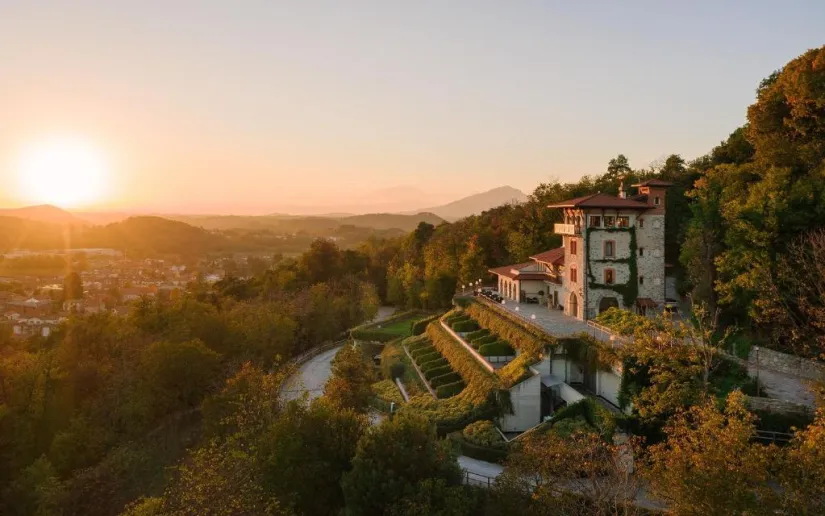
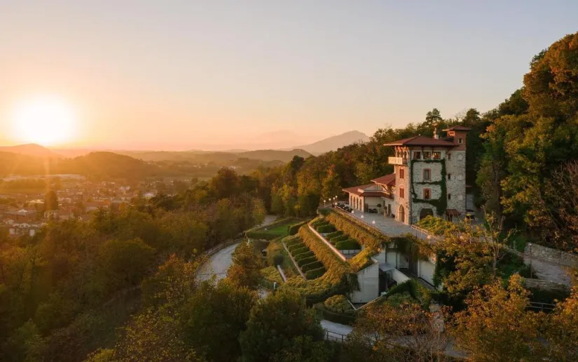

Tenuta de l'Annunziata
Tenuta dell'Annunziata ha casa nella natura, e dalla natura trae la propria essenza: il relais, offre camere dotate di ogni confort per il piacere dei sensi; nel Ristorante residente Quercus - cucina gourmet e sapori di eccellenza - vengono lavorati gli ingredienti stagionali prodotti dall'azienda agricola; del Wellness beneficia l'equilibrio tra corpo e mente, con l'immersione in trattamenti e sedute di benessere e di yoga negli oltre 1500 mq di spa; con il Bosco Bioenergetico si sperimenta il contatto con l’energia di alberi specifici, capaci di influire sul benessere organico e psichico attraverso un percorso rigenerante negli oltre tredici ettari di bosco. Una sorta di mondo magico a ridosso di una delle mete più note e piene di magia al mondo, il lago di Como; una tappa fondamentale ed esclusiva per esplorare il bello in ogni senso. La qualità organica e naturale di tutto ciò che Tenuta de l'Annunziata offre è alla base di una filosofia olistica mirata al benessere dell'ospite e alla sua cura attraverso ciò che natura crea, nel rispetto dei suoi cicli. L'eleganza, non è mai stata così naturale...
 
